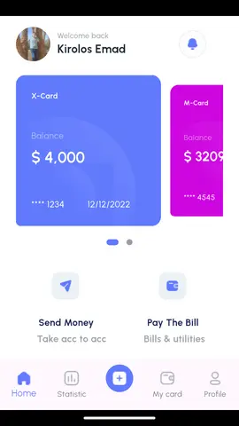
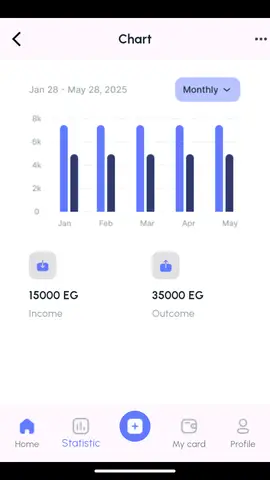

Mobile app · Android emulator captures
Financi
Finance app screens and interaction flows for authentication, dashboard metrics, cards, charts and profile views, built with responsive layouts, navigation, charts and carousels.